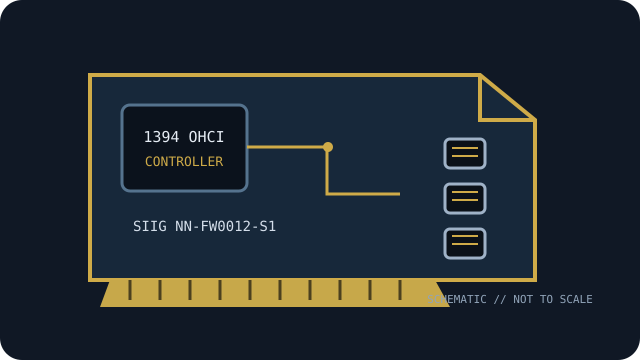

[ IEEE 1394 CONTROLLER // EXPANSION CARDS ]
SIIG NN-FW0012-S1
Three-port PCIe IEEE 1394b controller with three 9-pin FireWire 800 connectors. Verify the exact board label and revision before service.

MODEL SCOPE: SIIG NN-FW0012-S1. Specification distinctions below identify 1394a/1394b rates, physical bus and power limitations; host OS and driver support can change by revision and release.
Specifications and compatibility
| Exact model / SKU | SIIG NN-FW0012-S1 |
|---|---|
| Controller chipset | TI single-chip IEEE 1394 controller (SIIG product listing does not name the silicon part number). |
| PCI bus / lanes | PCI Express 1.0 x1. |
| IEEE 1394a rate | Bilingual 9-pin ports interoperate with IEEE 1394a / FireWire 400 devices at up to 400 Mb/s using suitable cabling. |
| IEEE 1394b rate | IEEE 1394b / FireWire 800, up to 800 Mb/s per link. |
| Ports and connectors | Three external 9-pin IEEE 1394b connectors. |
| Power / bus-power notes | The product listing does not specify auxiliary card power or per-port current limits. 9-pin connectors can carry bus power only within the card’s implemented and host-supplied limits; check SIIG documentation and peripheral requirements. |
| OS driver compatibility | SIIG product documentation advertises OS support by release; use its current driver/download notes and the platform OHCI driver where applicable. Validate the exact Windows/macOS/Linux version, because discontinued hardware may not have current vendor support. |
| Host compatibility | PCIe 1.0 x1 interface; the manufacturer lists full- and low-profile bracket options. A compatible PCIe slot, OS OHCI driver and suitable bilingual cable are required. |
Installation and archival notes
- Match the card’s printed model/revision and connector layout to the cited maker documentation; do not infer a controller IC or current limit from the connector alone.
- IEEE 1394 link rate is negotiated with the peripheral and cable. A FireWire 800 connector does not make a 400-Mb/s device or cable operate at 800 Mb/s.
- Use ESD precautions; validate system bus wiring, driver version, peripheral power source, and application-level compatibility before replacing a working legacy host.
Manufacturer and standards sources
- SIIG — NN-FW0012-S1 product specificationsManufacturer product reference for the named part; check the specific board revision and documentation availability.
- SIIG — FireWire 800 PCIe manualAdditional maker documentation or official model-family reference.
- IEEE — IEEE 1394-2008 standardIEEE 1394 bus/protocol standard reference; card-level details are in the manufacturer documentation.
- Linux kernel — FireWire subsystem documentationOHCI/FireWire software-driver reference; platform-specific support remains OS-release dependent.